Number of elements Enter the number of items your collection should contain, or the largest number your collection should have in the case of a collection not starting with the number n°1.
Example:
- For a collection containing 10,000 NFTs numbered from 20,001 to 30,000, the value to enter would be 30,000.
- For a collection containing 20,000 NFTs numbered from 10,001 to 40,000, the value to enter would be 40,000.
Example:
- For a collection containing 10,000 NFTs numbered from 20,001 to 30,000, the value to enter would be 30,000.
- For a collection containing 20,000 NFTs numbered from 10,001 to 40,000, the value to enter would be 40,000.
or
Number of the first item in the collection The number corresponding to the first item in the collection. In case there are any missing NFTs, this helps to determine them.
Number of the last item in the collection The number corresponding to the last item in the collection. In case there are any missing NFTs, this helps to determine them.

open_in_newInstall Node.JS Make sure you have Node.JS installed on your computer before you proceed to scrape a collection. Go to the official website, download and install the Installer.
open_in_newCollection URL This is the collection that will be scanned and analyzed. It does not affect your collection or wallet.
Process output See the progress of the process in real time.